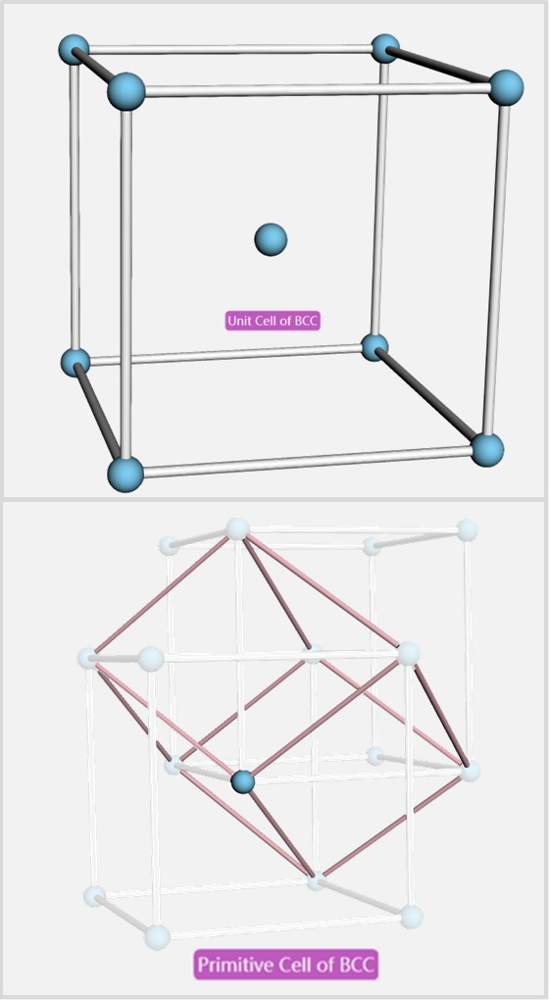

Common Crystal Structures in Solid State Physics

Scott Lv : ) , updated 2025, 08, 07 NCEPU (BD), HEP.cn , MOE.gov.cn, 3Dmol.js
Scott Lv : ) , updated 2025, 08, 07 NCEPU (BD),
HEP.cn , MOE.gov.cn, 3Dmol.js